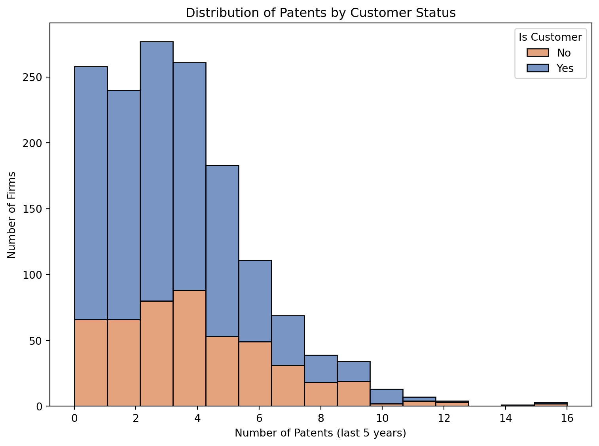
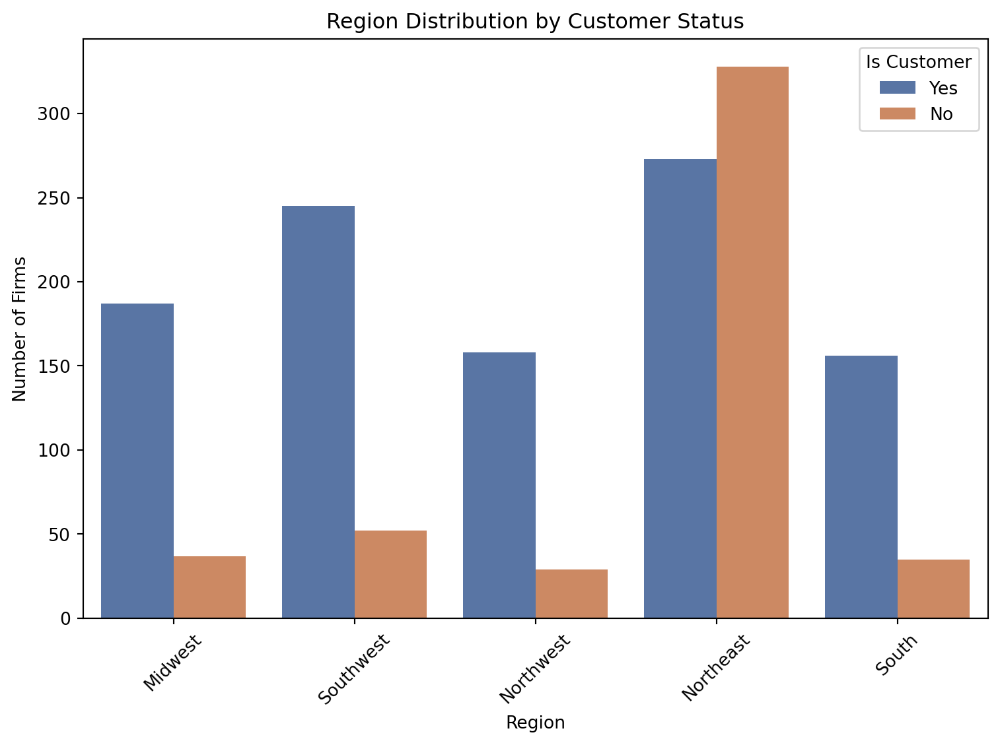
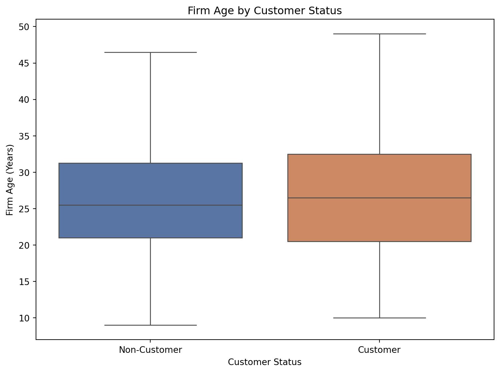
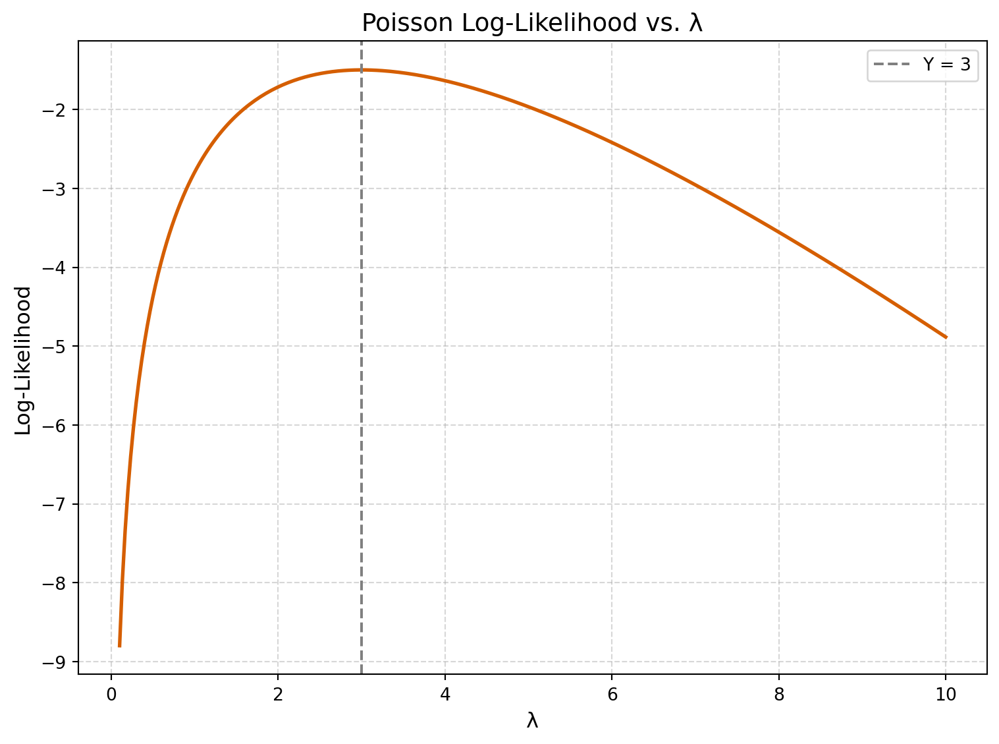
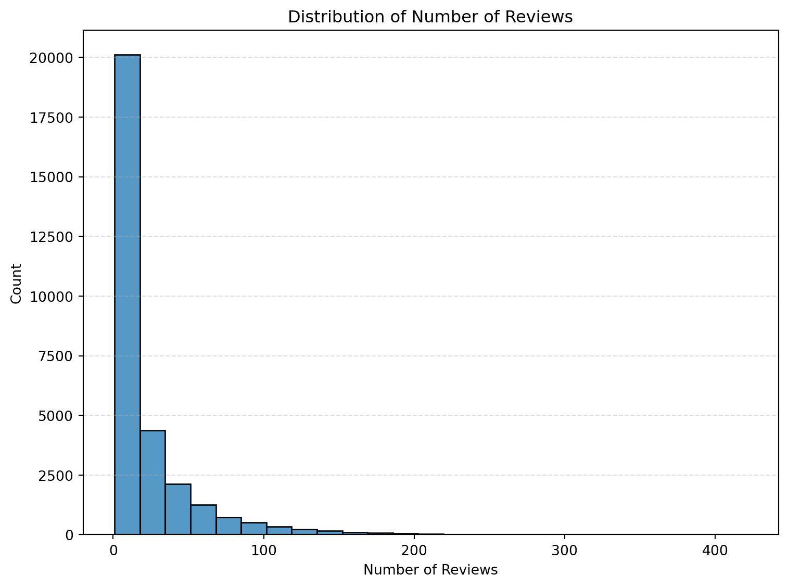
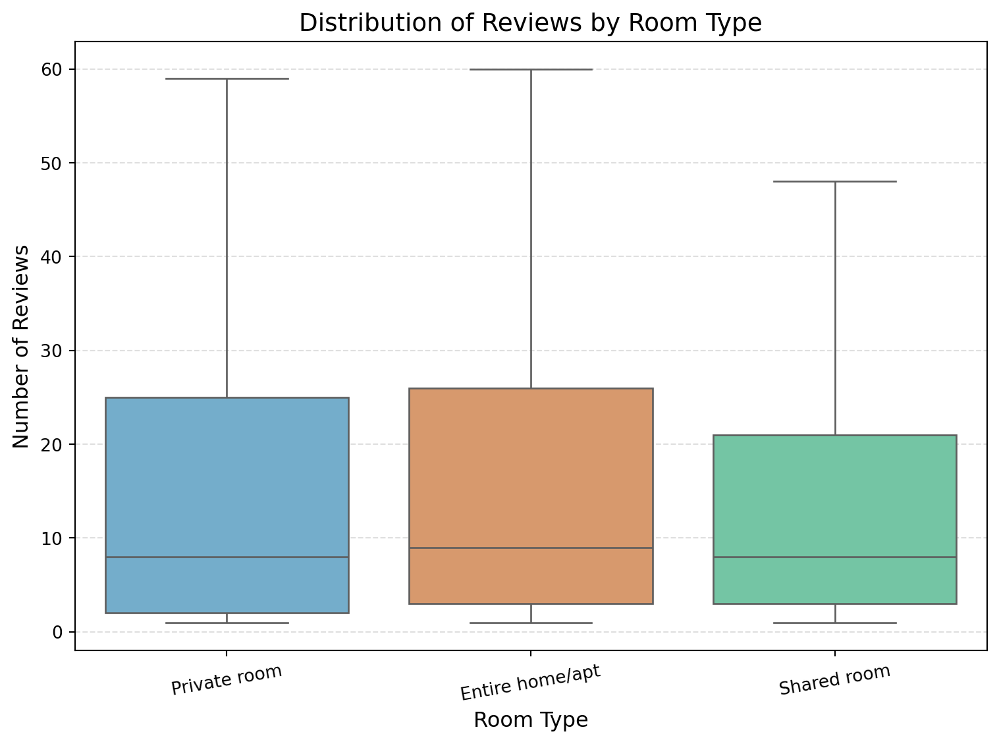
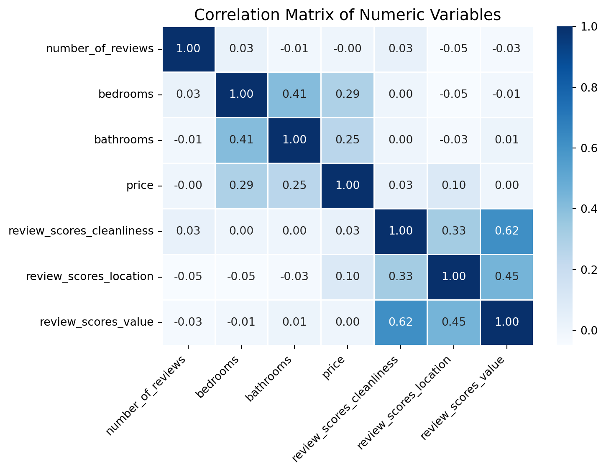

Blueprinty is a small firm that makes software for developing blueprints specifically for submitting patent applications to the US patent office. Their marketing team would like to make the claim that patent applicants using Blueprinty’s software are more successful in getting their patent applications approved. Ideal data to study such an effect might include the success rate of patent applications before using Blueprinty’s software and after using it. Unfortunately, such data is not available.
However, Blueprinty has collected data on 1,500 mature (non-startup) engineering firms. The data include each firm’s number of patents awarded over the last 5 years, regional location, age since incorporation, and whether or not the firm uses Blueprinty’s software. The marketing team would like to use this data to make the claim that firms using Blueprinty’s software are more successful in getting their patent applications approved.
Data
Code
import pandas as pd# Load Blueprinty datasetdf_blueprinty = pd.read_csv("blueprinty.csv")# Display first few rowsdf_blueprinty.head()
patents
region
age
iscustomer
0
0
Midwest
32.5
0
1
3
Southwest
37.5
0
2
4
Northwest
27.0
1
3
3
Northeast
24.5
0
4
3
Southwest
37.0
0
todo: Compare histograms and means of number of patents by customer status. What do you observe?
Comparison of Patents by Customer Status
To assess whether firms using Blueprinty’s software tend to receive more patents, we compare both the distribution and average number of patents between customers and non-customers.
Code
import seaborn as snsimport matplotlib.pyplot as plt# palette = {0: "#4C72B0", 1: "#DD8452"}# Plot histograms by customer statusplt.figure(figsize=(8, 6))sns.histplot(data=df_blueprinty, x="patents", hue="iscustomer", multiple="stack", palette=["#4C72B0", "#DD8452"], bins=15)plt.xlabel("Number of Patents (last 5 years)")plt.ylabel("Number of Firms")plt.title("Distribution of Patents by Customer Status")plt.legend(title="Is Customer", labels=["No", "Yes"])plt.tight_layout()plt.show()

Histogram of Patents Awarded by Customer Status
Means of Number of Patents by Customer Status
Code
# Compare average number of patents by customer statusdf_blueprinty.groupby("iscustomer")["patents"].mean().rename({0: "Non-customer", 1: "Customer"})
We observe that customers of Blueprinty tend to have a higher average number of patents compared to non-customers. The histogram shows a greater concentration of higher patent counts among customers. However, this is a descriptive comparison — it does not yet account for other variables like firm age or region.
In the next step, we will model the number of patents more formally using Poisson regression, both via MLE and built-in methods.
Blueprinty customers are not selected at random. It may be important to account for systematic differences in the age and regional location of customers vs non-customers.
Comparison of Region and Age by Customer Status
We now compare two additional variables — region and age — to see how they differ between Blueprinty customers and non-customers.
Code
import seaborn as snsimport matplotlib.pyplot as plt# palette = {0: "#4C72B0", 1: "#DD8452"}# Bar plot of region by customer statusplt.figure(figsize=(8, 6))sns.countplot(data=df_blueprinty, x="region", hue="iscustomer", palette=["#4C72B0", "#DD8452"])plt.title("Region Distribution by Customer Status")plt.xlabel("Region")plt.ylabel("Number of Firms")plt.legend(title="Is Customer", labels=["Yes", "No"])plt.xticks(rotation=45)plt.tight_layout()plt.show()

Figure: Region Distribution by Customer Status
The first figure shows the distribution of firms by region, split between Blueprinty customers and non-customers. We observe that:
The Northeast region has a substantially higher share of Blueprinty customers than other regions.
In contrast, regions like the Midwest, Southwest, and Northwest are dominated by non-customers.
This suggests that Blueprinty’s customer base is not randomly distributed geographically and region may be associated with software adoption.
Firm Age by Customer Status
The boxplot above compares the distribution of firm ages between Blueprinty customers and non-customers.
Code
# Boxplot of age by customer status# Boxplot of age by customer status# palette = {0: "#4C72B0", 1: "#DD8452"}plt.figure(figsize=(8, 6))sns.boxplot( data=df_blueprinty, x="iscustomer", y="age", hue="iscustomer", # assign hue palette=["#4C72B0", "#DD8452"], legend=False, showfliers=False)plt.xticks([0, 1], ["Non-Customer", "Customer"])plt.title("Firm Age by Customer Status")plt.xlabel("Customer Status")plt.ylabel("Firm Age (Years)")plt.tight_layout()plt.show()

Figure: Firm Age Distribution by Customer Status
Both groups have similar median ages, around 25–27 years.
The spread and interquartile range are also comparable, suggesting no substantial difference in age distribution between the two groups.
This implies that any difference in patent output is unlikely to be driven by firm age alone and supports the need to control for age in the Poisson regression model.
The second figure compares the distribution of firm ages by customer status using boxplots:
Customers and non-customers appear to have similar age distributions, though customers are slightly younger on average.
Both groups contain a mix of newer and older firms, but non-customers show slightly more outliers on the higher end.
These patterns imply that both region and firm age should be included as control variables in our regression models to better isolate the effect of Blueprinty software usage on patent output.The second figure compares the distribution of firm ages by customer status using boxplots:
Customers and non-customers appear to have similar age distributions, though customers are slightly younger on average.
Both groups contain a mix of newer and older firms, but non-customers show slightly more outliers on the higher end.
These patterns imply that both region and firm age should be included as control variables in our regression models to better isolate the effect of Blueprinty software usage on patent output.
Estimation of Simple Poisson Model
Since our outcome variable of interest can only be small integer values per a set unit of time, we can use a Poisson density to model the number of patents awarded to each engineering firm over the last 5 years. We start by estimating a simple Poisson model via Maximum Likelihood.
Poisson Likelihood Function
Since our outcome variable of interest (patents) consists of non-negative integer counts over a fixed time window, it is appropriate to model it using a Poisson distribution.
Let \(Y_i\) be the number of patents awarded to firm \(i\), and assume:
We will now implement this likelihood in Python and estimate ( ) via Maximum Likelihood Estimation.
Visualizing the Poisson Log-Likelihood for a Single Observation
To build intuition about Maximum Likelihood Estimation (MLE) under a Poisson model, we visualize how the log-likelihood changes as a function of λ when the observed count ( Y = 3 ).
The peak of this curve represents the MLE, which for a scalar Poisson model corresponds to ( = Y ).
Code
import numpy as npfrom scipy.special import gammaln# Define the Poisson log-likelihood functiondef poisson_loglikelihood(lambd, Y):if lambd <=0:return-np.inf # log-likelihood is undefined for non-positive lambdareturn np.sum(-lambd + Y * np.log(lambd) - gammaln(Y +1))
Code
import numpy as npimport matplotlib.pyplot as pltfrom scipy.special import gammaln# Define scalar Poisson log-likelihooddef poisson_loglikelihood_scalar(lambd, y):if lambd <=0:return-np.infreturn y * np.log(lambd) - lambd - gammaln(y +1)# Fixed observed Yy_obs =3# λ valueslambda_vals = np.linspace(0.1, 10, 300)log_likelihoods = [poisson_loglikelihood_scalar(l, y_obs) for l in lambda_vals]# Plotplt.figure(figsize=(8, 6))plt.plot(lambda_vals, log_likelihoods, color="#D55E00", linewidth=2)plt.axvline(x=y_obs, color="gray", linestyle="--", linewidth=1.5, label=f"Y = {y_obs}")plt.title("Poisson Log-Likelihood vs. λ", fontsize=14)plt.xlabel("λ", fontsize=12)plt.ylabel("Log-Likelihood", fontsize=12)plt.legend()plt.grid(True, linestyle="--", alpha=0.5)plt.tight_layout()plt.show()

Figure: Poisson Log-Likelihood as a Function of λ When Y = 3
Derivation of the MLE for Poisson Distribution
To derive the Maximum Likelihood Estimate (MLE) for a Poisson model, we start with the probability mass function:
This makes intuitive sense because the mean of a Poisson distribution is equal to\(\lambda\), and the sample mean is the natural estimator of the population mean.
# Compare the MLE with the sample meandf_blueprinty["patents"].mean()
3.6846666666666668
Interpretation
As expected under the Poisson model, the MLE of λ is equal to the sample mean of the observed patent counts:
\[
\hat{\lambda}_{\text{MLE}} = \bar{Y}
\]
This confirms the theoretical result that the mean of a Poisson distribution is both its expectation and the MLE for its rate parameter.
Estimation of Poisson Regression Model
Next, we extend our simple Poisson model to a Poisson Regression Model such that \(Y_i = \text{Poisson}(\lambda_i)\) where \(\lambda_i = \exp(X_i'\beta)\). The interpretation is that the success rate of patent awards is not constant across all firms (\(\lambda\)) but rather is a function of firm characteristics \(X_i\). Specifically, we will use the covariates age, age squared, region, and whether the firm is a customer of Blueprinty.
Estimating Poisson Regression via MLE with Covariates
Code
import numpy as npimport pandas as pdfrom scipy.optimize import minimizefrom scipy.special import gammaln# One-hot encode region and fix age/age_squaredregion_dummies = pd.get_dummies(df_blueprinty["region"], drop_first=True)age = df_blueprinty["age"]X = pd.concat([ pd.Series(1, index=age.index, name="intercept"), age.rename("age"), (age **2/100).rename("age_squared"), # scaled region_dummies, df_blueprinty["iscustomer"]], axis=1).astype(float)y = df_blueprinty["patents"].valuesX_matrix = X.to_numpy()# Poisson negative log-likelihooddef neg_loglikelihood_beta(beta, X, y): lambda_ = np.exp(X @ beta)return-np.sum(y * np.log(lambda_) - lambda_ - gammaln(y +1))# Run optimizerbeta_init = np.zeros(X_matrix.shape[1])result = minimize(neg_loglikelihood_beta, beta_init, args=(X_matrix, y), method="BFGS")beta_hat = result.x# Hessian and standard errorsdef hessian_poisson(beta, X): lambda_ = np.exp(X @ beta) W = np.diag(lambda_)return X.T @ W @ XH = hessian_poisson(beta_hat, X_matrix)cov_matrix = np.linalg.inv(H) # should work nowstandard_errors = np.sqrt(np.diag(cov_matrix))# Output tablecoef_table = pd.DataFrame({"Coefficient": beta_hat,"Std. Error": standard_errors}, index=X.columns).round(4)coef_table
Coefficient
Std. Error
intercept
-0.5089
0.1832
age
0.1486
0.0139
age_squared
-0.2970
0.0258
Northeast
0.0292
0.0436
Northwest
-0.0176
0.0538
South
0.0566
0.0527
Southwest
0.0506
0.0472
iscustomer
0.2076
0.0309
Validation Using Built-In GLM Poisson Regression
Code
import statsmodels.api as smimport pandas as pd# Rebuild the design matrix with correct naming and scalingregion_dummies = pd.get_dummies(df_blueprinty["region"], drop_first=True)age = df_blueprinty["age"]X_glm = pd.concat([ pd.Series(1, index=age.index, name="intercept"), age.rename("age"), (age **2/100).rename("age_squared"), region_dummies, df_blueprinty["iscustomer"]], axis=1).astype(float)y_glm = df_blueprinty["patents"]# Fit model using statsmodels GLM with Poisson familymodel = sm.GLM(y_glm, X_glm, family=sm.families.Poisson())results = model.fit()# Create results tableglm_table = pd.DataFrame({"GLM Coefficient": results.params,"GLM Std. Error": results.bse}).round(4)glm_table
GLM Coefficient
GLM Std. Error
intercept
-0.5089
0.1832
age
0.1486
0.0139
age_squared
-0.2970
0.0258
Northeast
0.0292
0.0436
Northwest
-0.0176
0.0538
South
0.0566
0.0527
Southwest
0.0506
0.0472
iscustomer
0.2076
0.0309
todo: Interpret the results.
Interpretation of GLM Poisson Regression Results
The results from the built-in Poisson regression model (statsmodels.GLM) closely match those obtained from our custom MLE implementation. This consistency confirms the correctness of our estimation procedure.
Key takeaways:
iscustomer: The coefficient is 0.2076, which implies that being a Blueprinty customer is associated with a 21% increase in expected patent count, holding other variables constant. This supports the company’s claim that their customers tend to be more successful in securing patents.
age and age_squared: The positive coefficient on age and negative coefficient on age_squared indicate a nonlinear relationship: the expected number of patents increases with age at first, but eventually levels off or declines slightly — a classic concave curve.
region dummies: Coefficients on regional variables are relatively small, suggesting modest variation in patent rates across regions compared to the base group (the dropped region).
intercept: The intercept (-0.5089) reflects the baseline log expected count of patents for a firm with all other predictors at zero (not very interpretable on its own, but standard in GLMs).
Overall, the model suggests that Blueprinty customers tend to have higher patent counts, and firm age plays a significant but diminishing role in patent output. The regional effects are comparatively minor.
Code
import numpy as np# Copy design matrix and create two versionsX_0 = X.copy()X_1 = X.copy()X_0["iscustomer"] =0X_1["iscustomer"] =1# Convert to NumPy arraysX0_matrix = X_0.to_numpy()X1_matrix = X_1.to_numpy()# Predicted patent counts under both scenariosy_pred_0 = np.exp(X0_matrix @ beta_hat)y_pred_1 = np.exp(X1_matrix @ beta_hat)# Compute average treatment effectavg_effect = np.mean(y_pred_1 - y_pred_0)avg_effect
0.7927623954445165
Estimated Effect of Blueprinty’s Software on Patent Counts
Using our estimated Poisson regression model, we predicted the number of patents each firm would receive under two hypothetical scenarios:
Scenario 1: None of the firms are Blueprinty customers
Scenario 2: All of the firms are Blueprinty customers
This means that, on average, using Blueprinty’s software is associated with an increase of approximately 0.79 patents per firm over the 5-year period, holding all else constant.
This approach provides an intuitive interpretation of the model’s estimated iscustomer coefficient on the original patent count scale, rather than in terms of logged outcomes or incidence rate ratios.
AirBnB Case Study
Introduction
AirBnB is a popular platform for booking short-term rentals. In March 2017, students Annika Awad, Evan Lebo, and Anna Linden scraped of 40,000 Airbnb listings from New York City. The data include the following variables:
Variable Definitions
- `id` = unique ID number for each unit
- `last_scraped` = date when information scraped
- `host_since` = date when host first listed the unit on Airbnb
- `days` = `last_scraped` - `host_since` = number of days the unit has been listed
- `room_type` = Entire home/apt., Private room, or Shared room
- `bathrooms` = number of bathrooms
- `bedrooms` = number of bedrooms
- `price` = price per night (dollars)
- `number_of_reviews` = number of reviews for the unit on Airbnb
- `review_scores_cleanliness` = a cleanliness score from reviews (1-10)
- `review_scores_location` = a "quality of location" score from reviews (1-10)
- `review_scores_value` = a "quality of value" score from reviews (1-10)
- `instant_bookable` = "t" if instantly bookable, "f" if not
Code
import pandas as pd# Load the Airbnb datasetdf_airbnb = pd.read_csv("airbnb.csv")# Show basic info and missing value summary# basic_info = df_airbnb.info()# missing_summary = df_airbnb.isnull().sum().sort_values(ascending=False)# df_airbnb.head(), missing_summary.head(10)
Initial Findings
The Airbnb dataset consists of listings scraped from New York City in March 2017. It includes over 40,000 entries, each representing a unique listing, along with key details such as price, number of bedrooms and bathrooms, room type, and several review-based scores.
Upon inspection, we found that several variables contain missing values, particularly the review-based scores:
review_scores_value: 10,256 missing entries
review_scores_location: 10,254 missing entries
review_scores_cleanliness: 10,195 missing entries
bathrooms: 160 missing
bedrooms: 76 missing
These missing values are substantial for the review scores (about 25% of the data), so we decided to drop rows with missing values on the variables relevant to our model.
We also note that: - Prices and number of reviews vary widely across listings
- Most listings fall into one of three categories: “Entire home/apt”, “Private room”, or “Shared room”
- A subset of listings are marked as “instant bookable”, which may correlate with higher customer convenience and possibly higher bookings
In the next step, we will build a Poisson regression model using number_of_reviews as a proxy for booking success, and explore how various listing features influence it.
Exploratory Data Analysis
Histogram
Code
import matplotlib.pyplot as pltimport seaborn as sns# Select cleaned subset for EDAcols_to_keep = ["number_of_reviews", "bedrooms", "bathrooms", "price","review_scores_cleanliness", "review_scores_location","review_scores_value", "room_type", "instant_bookable"]df_airbnb_clean = df_airbnb[cols_to_keep].dropna().copy()#| label: plot-number-of-reviews#| fig-cap: "Distribution of Number of Reviews"#| fig-width: 8#| fig-height: 6#| label: plot-number-of-reviews#| fig-cap: "Distribution of Number of Reviews"#| fig-width: 8#| fig-height: 6nice_blue ="#1f77b4"# a clean, professional shade of blueplt.figure(figsize=(8, 6))sns.histplot(df_airbnb_clean["number_of_reviews"], bins=25, color=nice_blue)plt.xlabel("Number of Reviews")plt.ylabel("Count")plt.title("Distribution of Number of Reviews")plt.grid(axis="y", linestyle="--", alpha=0.4)plt.tight_layout()plt.show()

Most listings have fewer than 50 reviews, with a long right tail. This suggests the data are heavily skewed and supports the use of a Poisson model for count outcomes.
Distribution of Reviews by Room Type - Boxplot
The plot above compares the distribution of review counts across different Airbnb room types.
Code
plt.figure(figsize=(8, 6))sns.boxplot( data=df_airbnb_clean, x="room_type", y="number_of_reviews", hue="room_type", palette=["#66B2D9", "#E9965B", "#66D3A6"], showfliers=False, legend=False)plt.xticks(rotation=10, fontsize=10)plt.yticks(fontsize=10)plt.xlabel("Room Type", fontsize=12)plt.ylabel("Number of Reviews", fontsize=12)plt.title("Distribution of Reviews by Room Type", fontsize=14)plt.grid(axis="y", linestyle="--", alpha=0.4)plt.tight_layout()plt.show()

Distribution of Price per Night
Private rooms and entire homes/apartments have similar median review counts, with private rooms showing slightly more variation.
Shared rooms tend to have slightly fewer reviews overall, with a lower maximum and tighter spread.
All room types exhibit a right-skewed distribution, with some listings receiving significantly more reviews than typical.
These findings suggest that room type may play a modest role in driving the number of reviews (i.e., bookings), making it a useful categorical predictor for the Poisson regression model.
Correlation Matrix
The correlation matrix above shows pairwise Pearson correlations between all numeric variables in the Airbnb dataset.
Code
import seaborn as snsimport matplotlib.pyplot as plt# Compute correlation matrix (numeric variables only)corr_matrix = df_airbnb_clean.select_dtypes(include="number").corr()# Plot the heatmapplt.figure(figsize=(8, 6))sns.heatmap(corr_matrix, annot=True, cmap="Blues", fmt=".2f", linewidths=0.5)plt.xticks(rotation=45, ha="right", fontsize=10)plt.title("Correlation Matrix of Numeric Variables", fontsize=14)plt.tight_layout()plt.show()

Review scores (cleanliness, location, value) are moderately correlated with one another — especially cleanliness and value (ρ ≈ 0.62).
Price has weak correlations with most other variables, but a modest positive correlation with number of bedrooms (ρ ≈ 0.29).
Number of reviews, our proxy for bookings, shows very weak correlations with the other numeric variables — indicating that categorical variables (like room type or instant bookability) may explain more variation in review counts.
This analysis supports including review scores, room features, and booking features in a Poisson model to explain variation in review counts.
import statsmodels.api as smimport pandas as pd# Fit the Poisson regression model using GLMmodel = sm.GLM(y, X, family=sm.families.Poisson())results = model.fit()# Display coefficients and standard errorspoisson_table = pd.DataFrame({"Coefficient": results.params,"Std. Error": results.bse}).round(4)poisson_table
Coefficient
Std. Error
intercept
3.0725
0.0192
log_price
0.1348
0.0029
bedrooms
0.0468
0.0020
bathrooms
-0.1520
0.0037
review_scores_cleanliness
0.1088
0.0015
review_scores_location
-0.0975
0.0016
review_scores_value
-0.0797
0.0018
instant_bookable
0.3408
0.0029
Private room
0.0850
0.0034
Shared room
-0.1067
0.0091
Interpretation of Poisson Regression Coefficients
The coefficient table shows the log-linear impact of each variable on the expected number of reviews:
log_price (0.1348): A 1-unit increase in the log price (i.e., roughly a 100% increase in price) is associated with a 0.1348 increase in the log count of reviews. This suggests that more expensive listings tend to get slightly more reviews, though the effect is modest.
bedrooms (0.0468): Each additional bedroom is associated with a ~4.7% increase in expected review count (see IRR interpretation below).
bathrooms (-0.1520): Surprisingly, each additional bathroom is associated with a lower expected review count — possibly due to larger units being less frequently booked.
review_scores_cleanliness (0.1088): A 1-point increase in cleanliness score leads to higher expected review counts — a sign that perceived cleanliness drives engagement.
review_scores_location and value both have negative coefficients, suggesting lower booking volume with higher perceived scores, possibly due to pricing or neighborhood quirks.
instant_bookable (0.3408): Listings that are instantly bookable receive significantly more reviews, indicating that booking convenience strongly influences customer engagement.
Room Types:
Private room (0.085): More reviews than the baseline (entire home/apt)
Shared room (-0.1067): Fewer reviews than baseline
Code
import numpy as npimport pandas as pd# Compute IRRs and 95% confidence intervalsirr = np.exp(results.params)irr_lower = np.exp(results.params -1.96* results.bse)irr_upper = np.exp(results.params +1.96* results.bse)# Combine into a tableirr_table = pd.DataFrame({"IRR": irr,"95% CI Lower": irr_lower,"95% CI Upper": irr_upper}).round(3)irr_table
IRR
95% CI Lower
95% CI Upper
intercept
21.595
20.796
22.425
log_price
1.144
1.138
1.151
bedrooms
1.048
1.044
1.052
bathrooms
0.859
0.853
0.865
review_scores_cleanliness
1.115
1.112
1.118
review_scores_location
0.907
0.904
0.910
review_scores_value
0.923
0.920
0.927
instant_bookable
1.406
1.398
1.414
Private room
1.089
1.082
1.096
Shared room
0.899
0.883
0.915
Incidence Rate Ratio (IRR) Interpretation
Exponentiating the coefficients gives us IRRs — more intuitive multiplicative effects on review count:
instant_bookable (IRR = 1.406): Listings with instant booking receive ~40.6% more reviews, on average, than those without it.
log_price (1.144): A 1-unit increase in log price is associated with a 14.4% increase in expected reviews.
bedrooms (1.048): Each additional bedroom increases expected review count by ~4.8%.
bathrooms (0.859): Each additional bathroom reduces expected review count by about 14.1%.
review_scores_cleanliness (1.115): Each 1-point increase in cleanliness score is associated with ~11.5% more reviews.
Shared room (0.899): Shared rooms receive ~10% fewer reviews than the reference category (entire home/apt).
Overall, the IRRs provide strong evidence that instant booking, cleanliness, and room configuration are significant predictors of review volume — your proxy for demand.